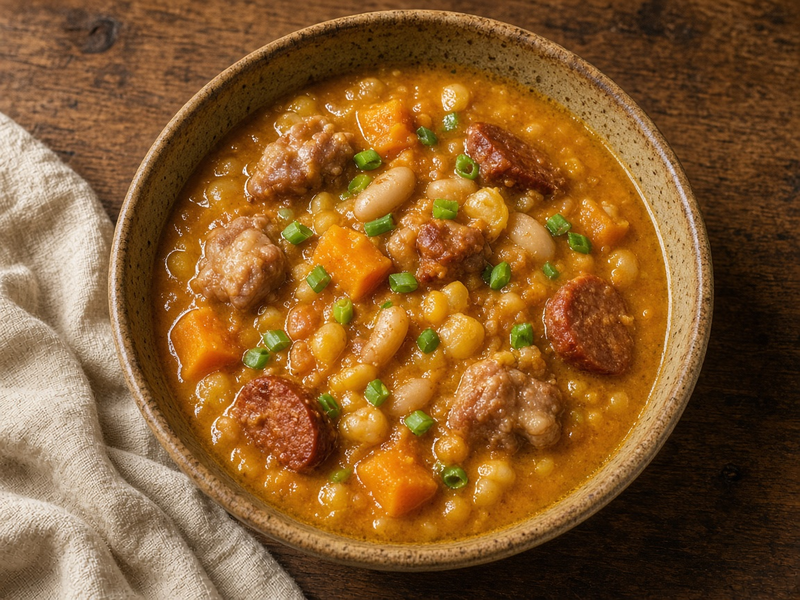
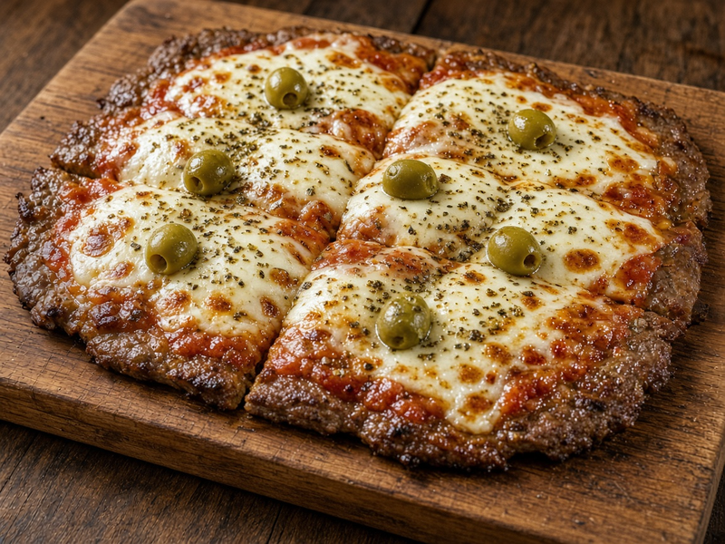
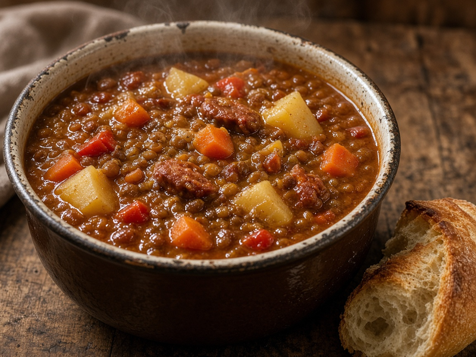
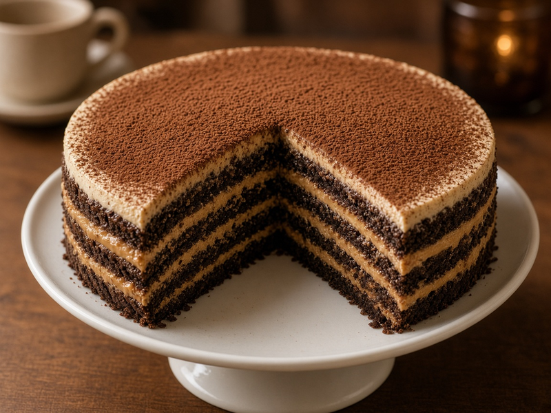
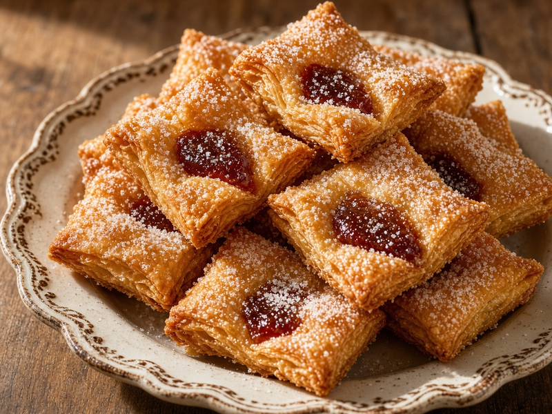
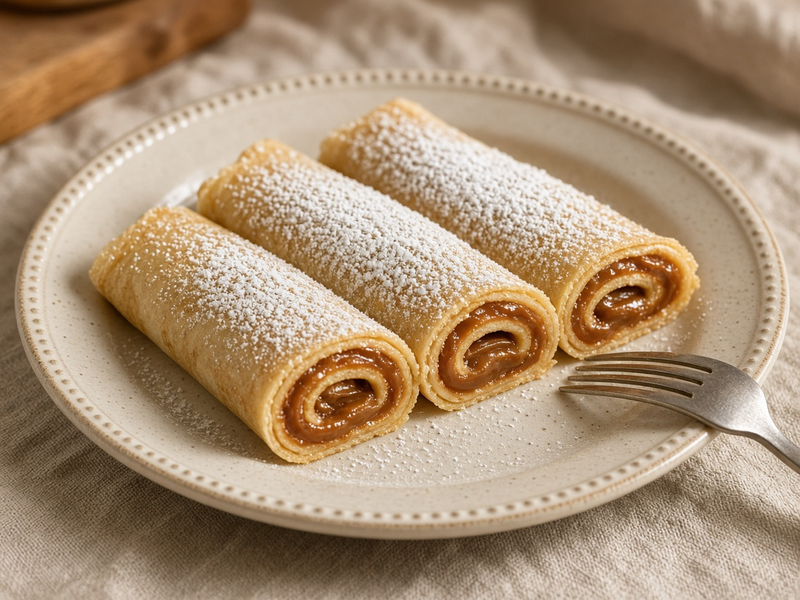

Salado
Locro de maíz

Guiso criollo de maíz blanco, zapallo y cortes de cerdo. Ideal para días fríos.
Descargar receta en PDF de locro de maízRecetario casero
Elegí una categoría y las recetas aparecen en el centro de esta página.
Cada ficha tiene foto y un PDF con ingredientes, pasos y notas de cocina.
Seleccioná Saladas o Dulces para ver solo ese grupo, o Todas para mostrar el catálogo completo.
Salado

Guiso criollo de maíz blanco, zapallo y cortes de cerdo. Ideal para días fríos.
Descargar receta en PDF de locro de maízSalado

Matambre de cerdo al horno, con salsa, muzzarella y orégano, cortado en porciones.
Descargar receta en PDF de matambre a la pizzaSalado

Lentejas con verdura de estación y chorizo colorado. Un plato de olla para toda la semana.
Descargar receta en PDF de guiso de lentejasDulce

Capas de galletitas de chocolate y crema de dulce de leche con queso. Sin horno.
Descargar receta en PDF de chocotortaDulce

Masa hojaldrada frita, rellena de membrillo y terminada con azúcar. Clásico de fechas patrias.
Descargar receta en PDF de pastelitos criollosDulce

Masa liviana hecha en sartén, enrollada con dulce de leche. Postre rápido de semana.
Descargar receta en PDF de panqueques con dulce de leche